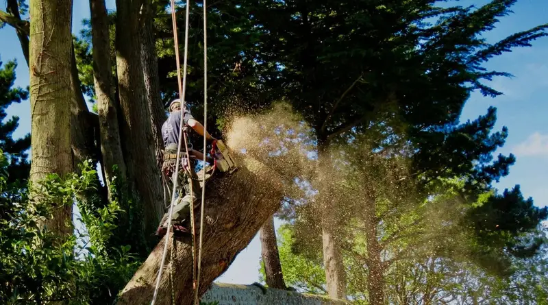

Felling & dismantling
Where there’s room, a tree can come down in one. Where there isn’t, we climb it and take it down in sections, planning every cut around your house, walls and garden.
What’s included
- Sectional dismantling by trained climbers
- Controlled felling where space allows
- Rigging and lowering over roofs and walls
- Brash and timber cleared away